fifteen steps from a coin flip, via light, to a qubit
a hands-on workshop · you drive, the slides guide
Open the tutorial on your own screen — every step there is interactive, and playing with it is the workshop.
Per step: a short framing here, a few minutes of hands-on play there, then we regroup on what surprised us.
The creed of the day: we never add anything quantum. We only keep details — and let light audit the books.
Brian Cox, challenged on BBC radio to state the rules inside a minute
Will Oliver & Jeff Grover on what quantum computing is
The promise of the day: you will not be asked to believe any of these. You build all four, with your own hands, starting from nothing but coin flips.
flip · count · bet · and refuse to be sloppy
the coins already in the room
Before you flip: what do you expect the pooled line to do?
Tap Flip ten times. Every tap lands on this screen.
The honest statement before flipping is a bet: 50%. The line tells us whether the bet was any good.
Your coin always lands the same way. Which way? Nobody knows — not even you.
Ten flips. Your own line is flat; the room's still says ½.
No luck in this coin at all — only ignorance. Same 50%.
Your phone now holds a coin with a bias you cannot see.
Ten flips again. Same pooled forecast?
Both rounds say 50%. Do you believe the same thing in both?
Round A: everyone huddles around ½.
Round B: everyone at one end or the other. Round C: everyone somewhere else. The room average is ½ every time.
One number cannot tell luck from ignorance.
Score each round's uncertainty by its bandwidth, first as one anonymous bag of flips: all three rounds read the same ≈ ½.
Now tell the bookkeeper whose flip is whose. Round A barely narrows — the luck is in the throw and stays: statistical (aleatoric). Round B collapses to zero — only a fact not yet learned: systematic (epistemic).
Round C narrows partway, to the mixed belief's bandwidth. What information removes was epistemic; what survives is aleatoric.
Odds on the x-axis. Bandwidth — the spread you expect — on the y-axis.
Every fully known coin lands on the same arc.
The mystery coins sit in the corners and pool to the centre. A coin you only know on average lands inside. One number added; a shape appeared.
Slide p. The dot never leaves the arc.
Every coin you fully know sits on the rim. Every coin you don't sits inside.
Technical aside: the arc length between two beliefs is how well a run of throws can tell them apart.
Believe q₁ with some weight, q₂ with the rest: your belief slides along the chord.
All chords together fill the interior — the half-disk is the space of every honest belief.
Rim: randomness that stays. Depth: ignorance that flips can cure.
The pointer: centre to state, angle 2θ.
The needle: the same arrow seen from the state, angle θ — always-H and always-T at right angles.
Add the components, then square. Hold on to that.
Why two numbers? Odds and bandwidth don't capture everything you could believe about a coin — so who says bandwidth is the right one to keep?
Half a disk — half of what?
Next: light.
Sheet 1 keeps only the horizontal wiggle.
Sheet 2 at 0° lets everything through; at 90° nothing.
After sheet 1 the light is always-H. A fully known coin, made of light.
Light is a wave that wiggles sideways as it flies: an H wiggle of size a and a V wiggle of size b, both at once, locked by a² + b² = 1.
That pair (a, b) is all polarization means. A sheet keeps only the wiggle along its slots: fraction a² of the brightness passes (Malus 1808).
Drag β to repaint the split — and note the flip switch: that innocent little switch is the hero of the finale.
Your phone's beam has an angle you cannot see.
Send photons through a horizontal sheet, one at a time: click or no click.
The fraction that passes is your beam's p.
The sheet stays fixed — one question, never turned. Every participant sends their own secret tilt through it, 25 photons per run, scored like a coin: average and band width.
The room's dots land on the coin's semicircle — never-passes and always-passes at the ends, the 45° beam on top.
Nature just redrew our drawing, in glass. Reveal the angles: the wave's own direction is the needle.
Let the polarization wander: the dot sinks. Fully wandering = unpolarized = the centre.
A pure 45° beam and an unpolarized beam both answer 50% to the horizontal question.
Same forecast, different knowledge. Again.
Turn the sheet to 45°. Everyone measures again.
The 45° answer minus ½ is the bandwidth — with a sign.
We kept the right two numbers. Nature keeps the same books, and signs them.
The sheet projects the needle: add the components along the sheet.
The light you see is the square.
At 45°: ½ + cos θ sin θ. Half plus the signed bandwidth.
Two crossed sheets: dark.
Slide a third sheet between them: light.
Each sheet projects, then the intensity squares. An obstacle that helps — remember it for the finale.
Beam angle θ; dot angle 2θ.
The 0° question and the 45° question use the same circle, a quarter turn apart.
Two beams, one dot under the horizontal question.
Turn the sheet to 45°: mirror images across the diameter.
A coin can be asked one thing. Light can be asked at every angle — and the answers fill the disk.
The field tip of a linear beam bounces along a line.
A point going round a circle casts exactly that shadow.
The needle's two parts each carry a clock. So far they tick in step. What if they didn't?
Some beams have no noise at all — pure — and still sit inside the disk.
Every sheet says 50%. It looks like nothing. It is something.
One more question — a delay, then a sheet — and they leave the plane.
The delay dial sweeps the disk into a ball.
Pure beams on the surface, mixtures inside, and nothing left to ask.
This ball has three names: Bernoulli, Poincaré, Bloch. It is a qubit.
Each of you is one photon. Press once per round.
Four rounds of φ: the room's own clicks draw the fringe. A mixture source draws nothing.
One click at a time — and still cos²(φ/2). Each photon carries the whole ball.
Coin → half a disk. Every sheet angle → the disk. A delay → the ball. ℝ → ℂ, rebit → qubit.
Four claims, taken on faith this morning. All four built.
One pure beam. Each participant bumps their delay by a random amount.
Every copy is still pure; the room's average is not.
That is what a noisy room does to a qubit. Thank you for being the noise.